Les fêtes Johanniques de Reims, festivités médiévales dans la cité des sacres, met comme de coutume à l'honneur Jeanne d'Arc et Charles VII.
Durant deux jours, le centre de Reims se transforme en village médiéval, avec des dizaines d'artisans et médiévistes prêt à vous plonger dans ce riche univers historique. Concerts, spectacles et reconstitution sont de la partie du côté de la place du Forum, de la place Royale, du parvis de la cathédrale ou encore en la basilique Saint-Remi.
Durant ces deux jours, une marche nocturne composée d’une centaine de figurants, villageois et combattants, avec à sa tête Jeanne d'Arc. Arrivée en musique avec la Compagnie Tempradura sur le Parvis de la Cathédrale pour une présentation de la pucelle d'Orléans au "peuple de Reims".
De nombreuses animations sont présentées comme étant "unique en France", à l'instar d'un carillon médiéval de 4 mètres, mené de mains de maître par la compagnie Gueule de Loup.
Le temps fort du weekend, c'est bien évidemment le Grand cortège du Sacre. Au départ de la Basilique Saint-Remi, ce sont près de 500 figurants qui escorteront Jeanne d’Arc et Charles VII dans leur périple jusqu’à la Cathédrale.
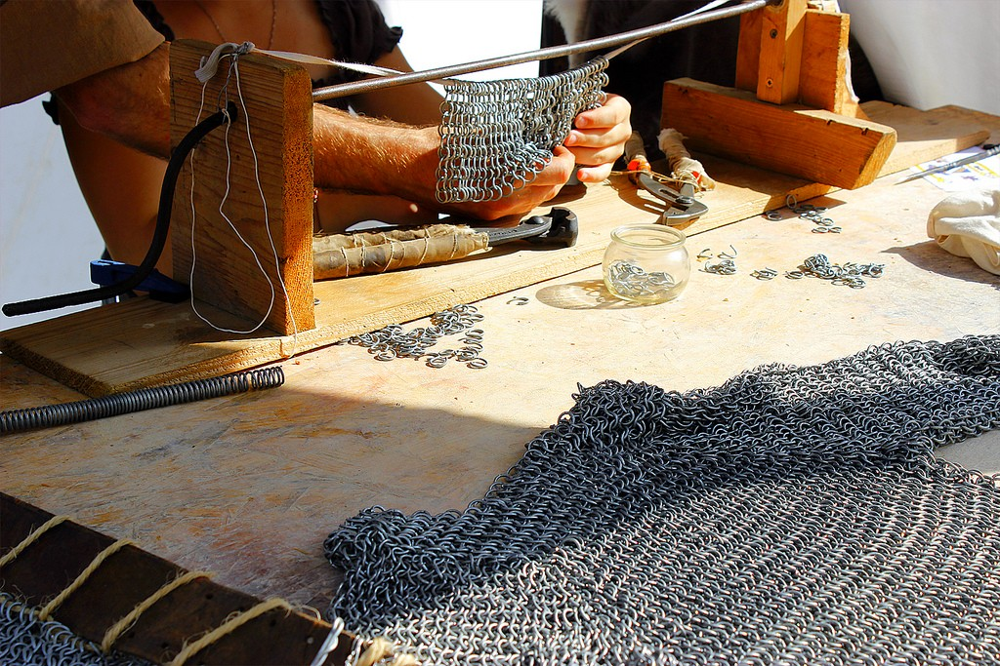 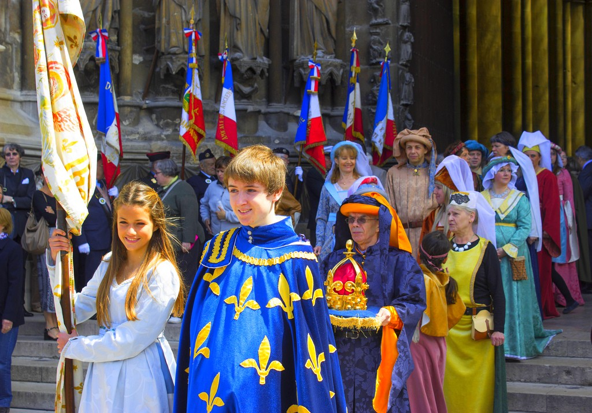
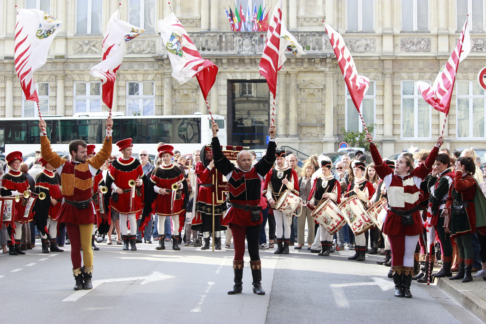 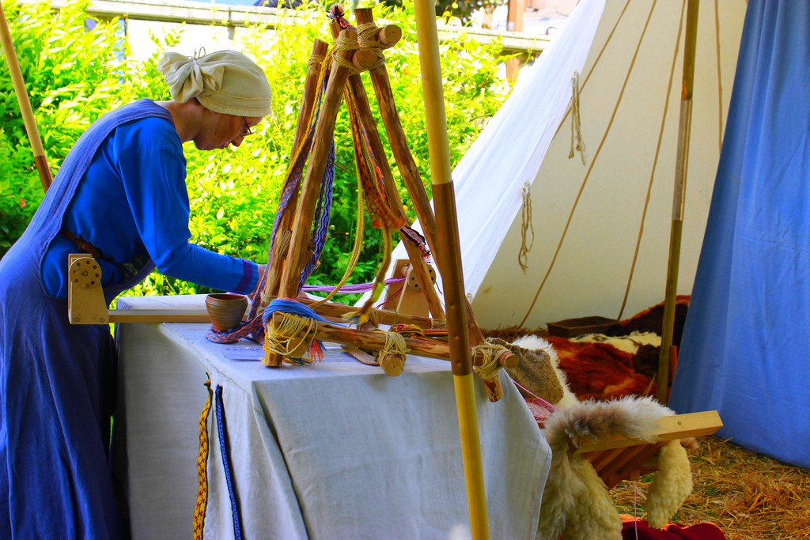
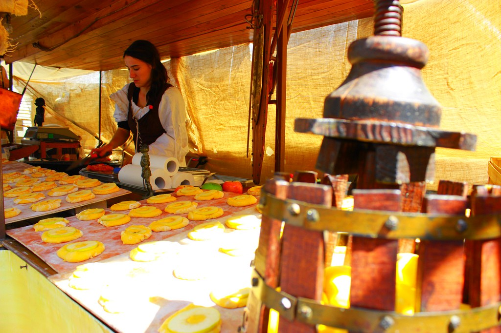 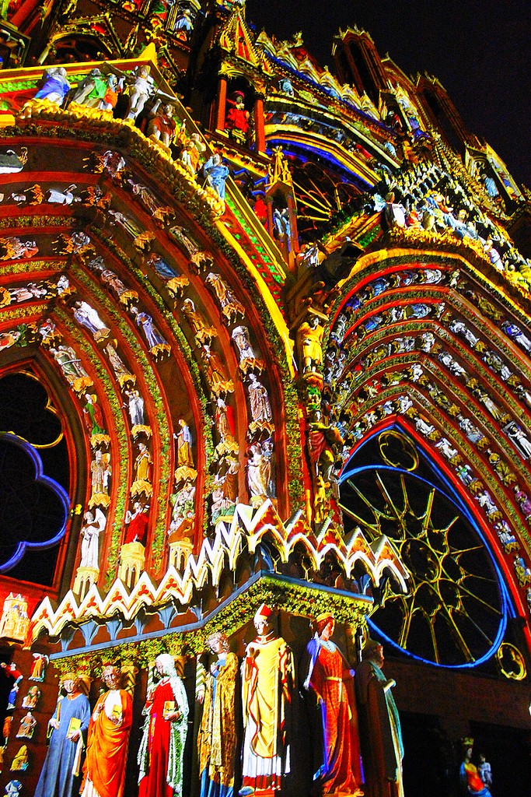
Venez admirer le spectacle son et lumière "Rêve de couleurs" sur la façade de la Cathédrale Notre-Dame de Reims : celui-ci vous fera voyager dans le temps.
Crée par Skertzo, metteur en scène des patrimoines, "Rêve de couleurs" est un spectacle de polychromie dynamique offert par la ville de Reims qui métamorphose l'architecture,met en vie la foule des sculptures de la cathédrale. La façade se révèle alors dans sa beauté de couleurs, le rose d'une joue, le noir d'une pupille, l'or d'une étoffe, une aile bleue et l'ange esquisse un sourire...
La durée du spectacle est de 25 minutes et 2 spectacles par soirée ont lieu devant la Cathédrale de Reims. De plus, il y a 10 minutes de polychromie fixe entre les 2 représentations et 15 minutes de polychromie fixe à la fin du second spectacle.
Un système de boucle magnétique pour les personnes malentendantes est disponible dans le périmètre de la tour gauche projetant le spectacle
Les spectacles ont lieu de Mai à Spetembre au cours de l'année
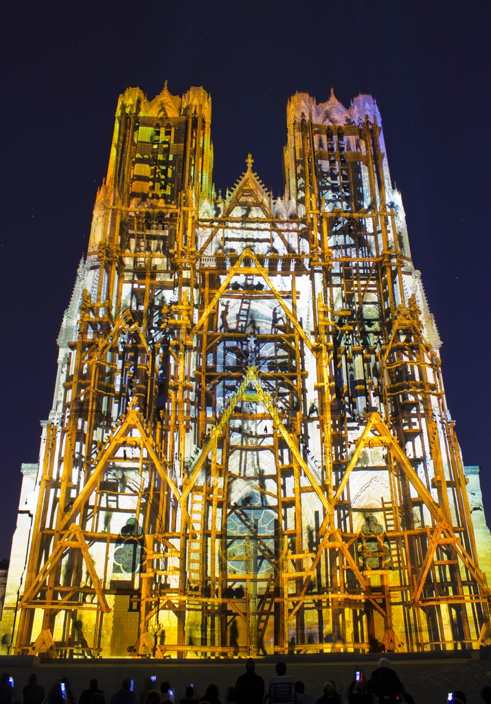 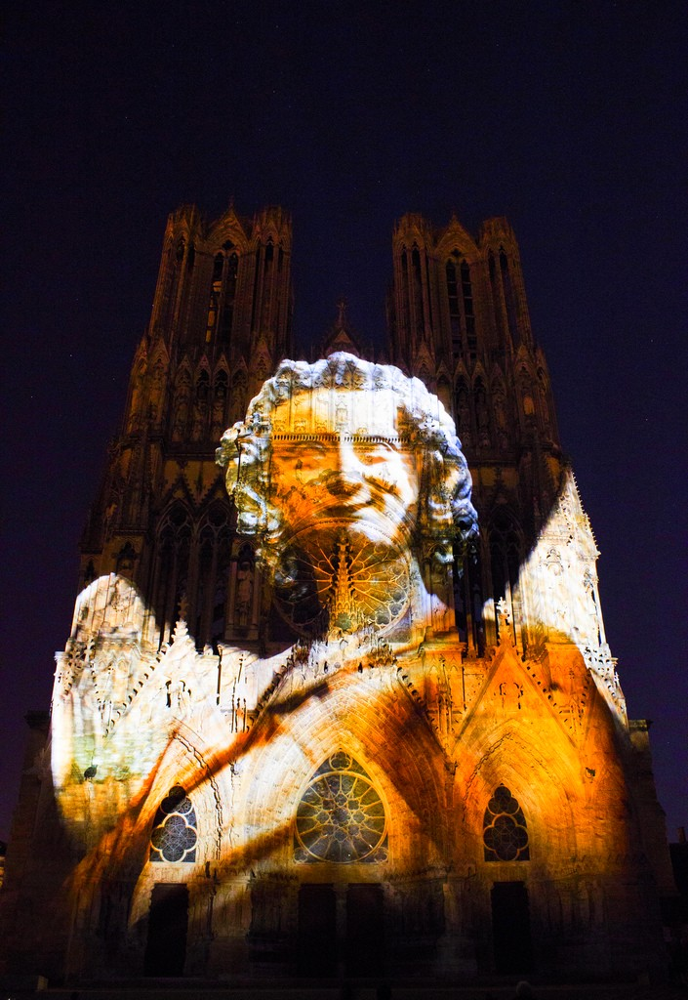
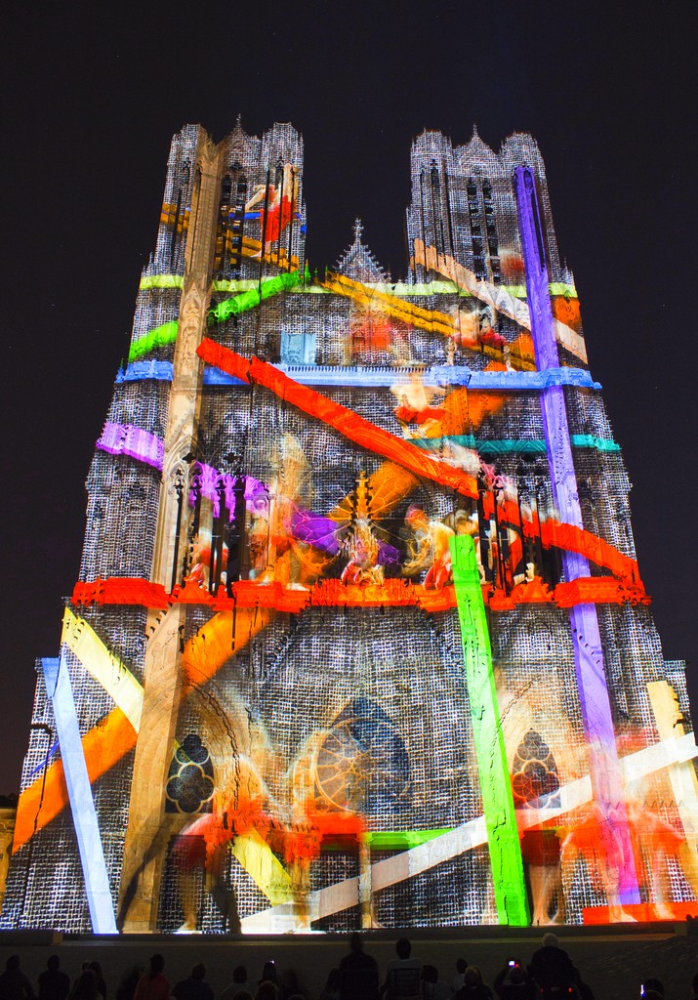 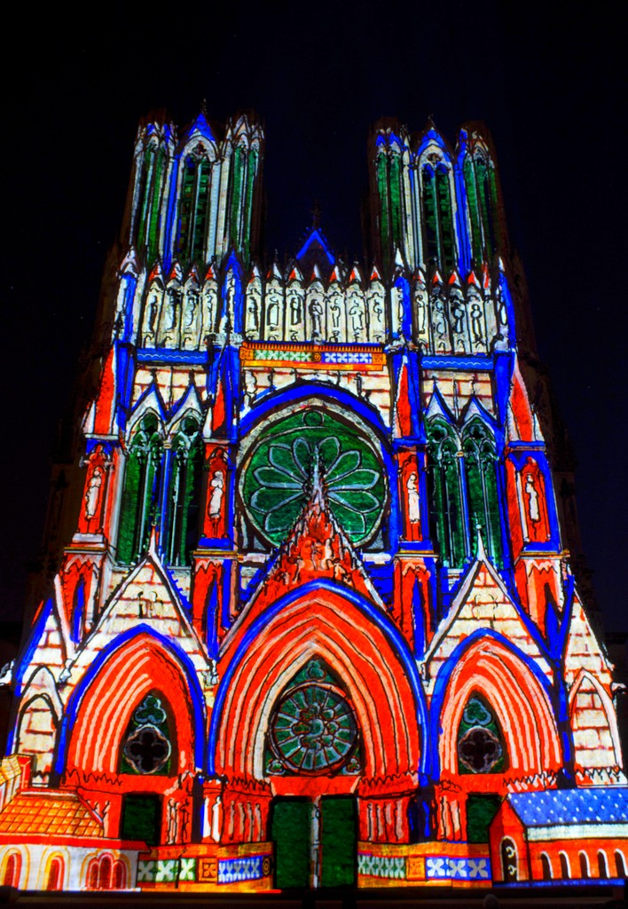
En 1982, « Les Jolivettes », groupe folklorique rémois, décide de créer un festival international de folklore. L’objectif est de montrer aux rémois ainsi qu’aux touristes des spectacles de qualité regroupant les différents folklores du monde entier. Ces échanges interculturels permettent également de faire découvrir des coutumes parfois méconnues du grand public.
Près de trente ans durant, les Sacres du Folklore seront organisés en même temps que les Fêtes Johanniques – en juin – afin de créer une manifestation de grande ampleur propre à attirer rémois et touristes autour d’une grande fête. Au fil des années, la manifestation remporte du succès en attirant de plus en plus de monde.
Les Sacres du Folklore, ce sont d’une part des spectacles de danse – qui cette année auront lieu sur la Place de l’Hôtel de Ville de Reims - mais également des animations dans les différents quartiers de la ville. Le Folklore représente des valeurs d’échanges culturels et de partage ; c’est pour cela que Les Jolivettes et la municipalité, tout au long de ces années, ont souhaité faire passer ce message au plus grand nombre. Des liens ont été établis avec les maisons de quartier, les écoles, les maisons de retraite et c’est ainsi que durant une semaine, nous pouvons retrouver les différents groupes invités dans les quartiers populaires. L’opération, est, chaque année, un succès et cette année 2012 n’échappera pas à la règle !
Par ailleurs, chaque année, Les Jolivettes veillent à la qualité de prestation des groupes invités afin d’offrir le meilleur des folklores représentatifs de chaque pays. C’est ainsi qu’une attention toute particulière est apportée non seulement à la danse mais aux musiciens et aux chanteurs qui composent les différents groupes folkloriques.
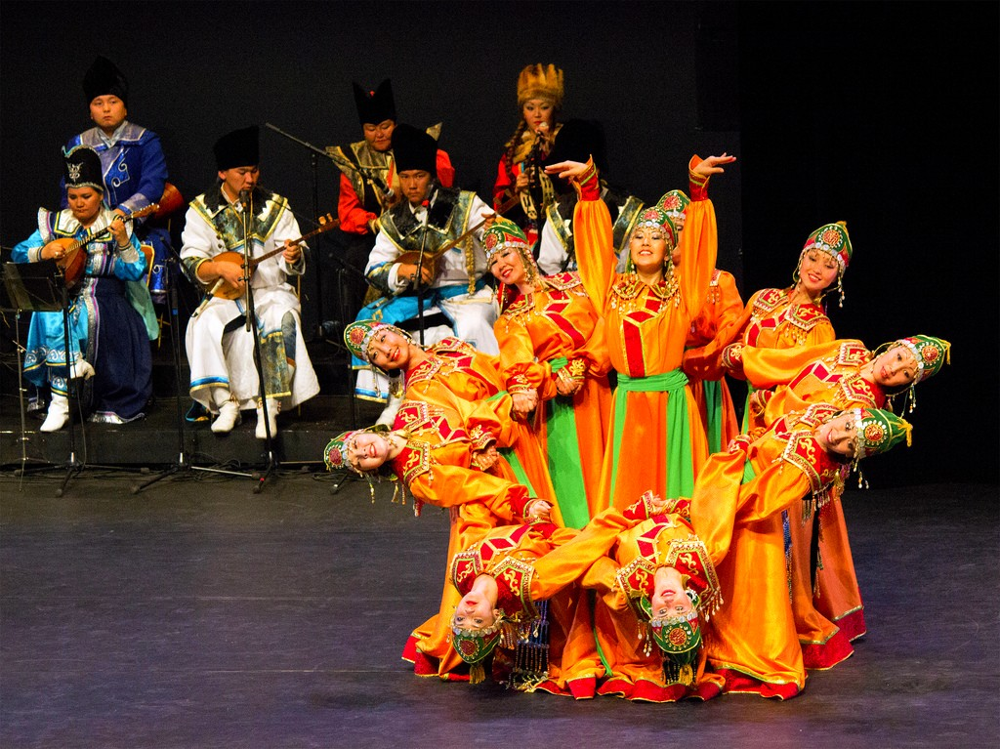 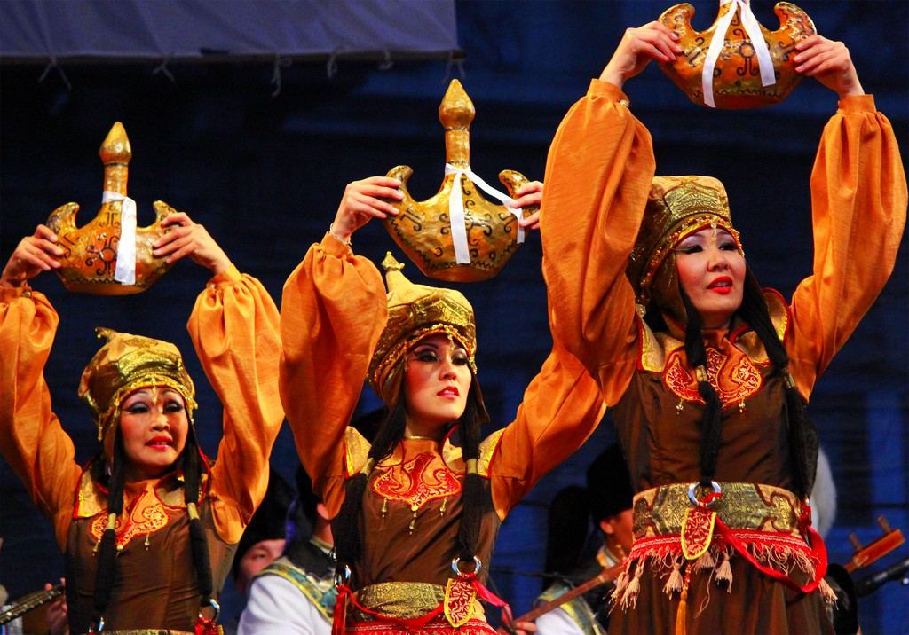
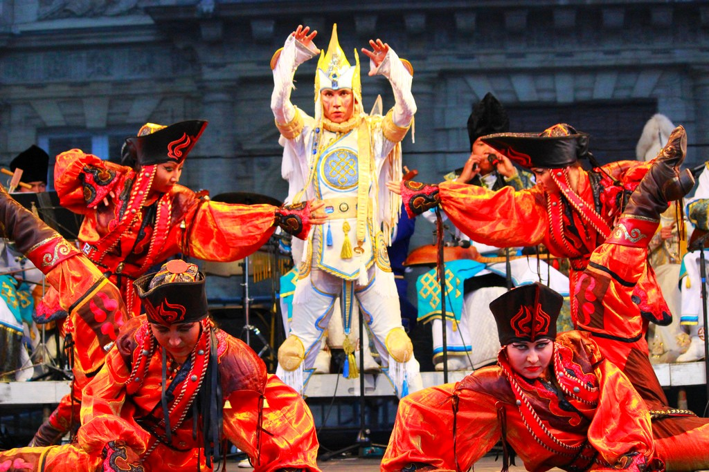 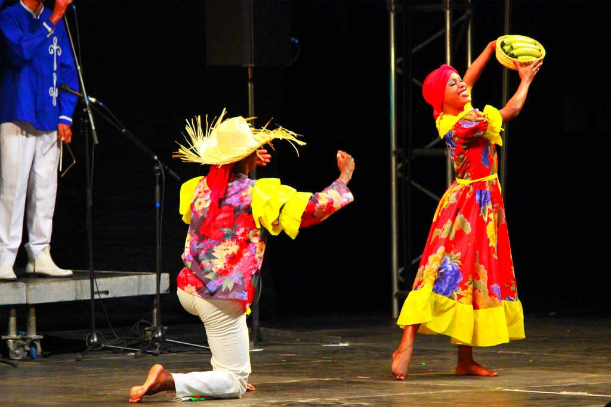